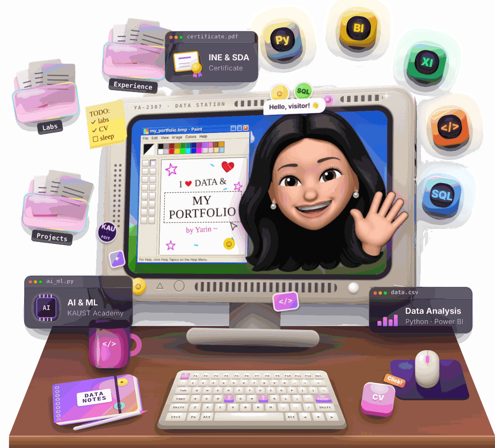
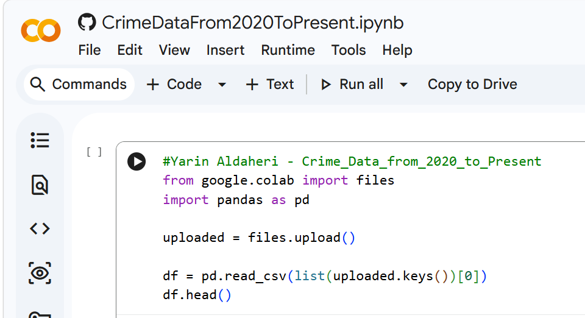
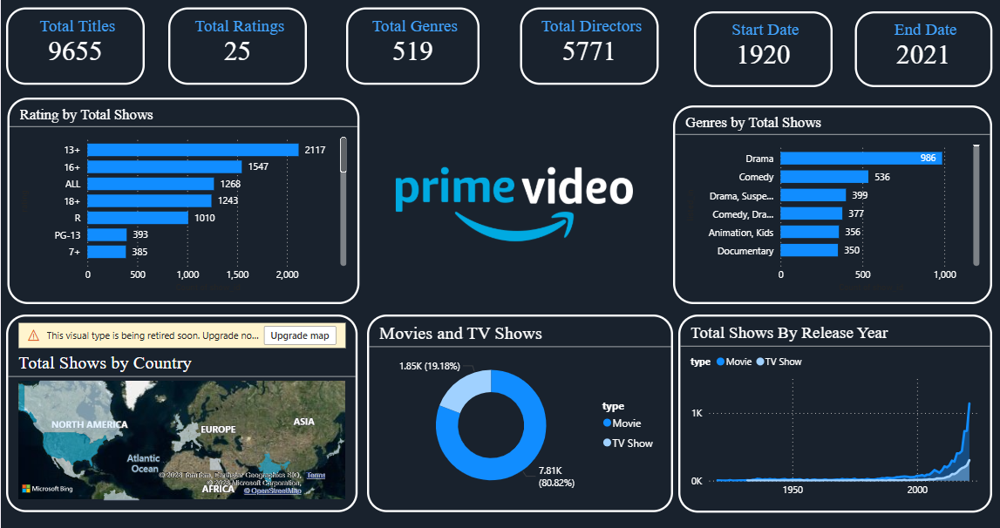
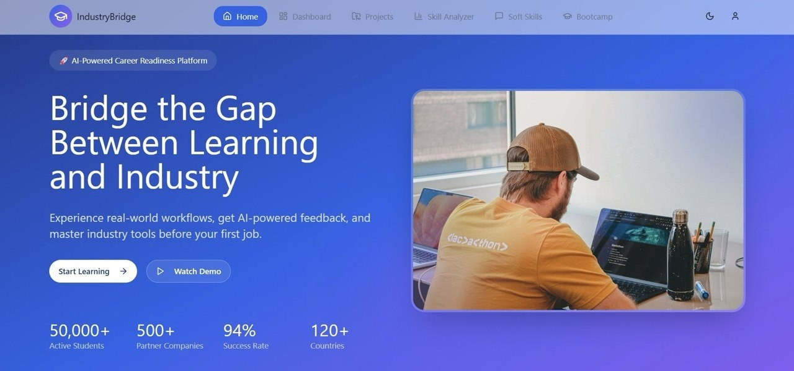

IT Strategy & Governance Platform
JEDCO · team project
A web platform for the IT Governance team at JEDCO to follow strategies, KPIs, risks and findings in one place.
Read more →Student ID: 2307260
KAU · FCIT
Open to opportunities
Welcome! Here is my work that I'm proud to share.
Hi, I'm Yarin Abdulaziz Aldaheri, an IT student at King Abdulaziz University who loves data and AI. Scroll down to see my work!
About me GitHub
About me
I am Yarin Abdulaziz Aldaheri, a Bachelor's student in Information Technology at the Faculty of Computing and Information Technology, King Abdulaziz University in Jeddah. I am interested in data science and artificial intelligence, and I like learning new tools all the time.
I did my co-op training at Jeddah Airports Company (JEDCO), where I worked with different IT teams like IT Governance, User Support and Network.
I also have the Junior Data Science Certificate (SDA & INE), the Introduction to AI program from KAUST Academy, and the Forward Program from McKinsey.org.
Right now I am working on my graduation project Raqeeb, a platform that analyzes smart-meter data, highlights unusual consumption patterns and helps prioritize cases for further review.
"Every dataset has a story, and I love finding it."
Experience
Jeddah Airports Company (JEDCO) · Summer 2026 · 200+ hours
During my training I moved between several IT teams and saw how technology supports the airport every day.
My toolkit
Soft skills

I break a big problem into small steps and solve it one by one.
Like in the Nahj hackathon and the team tasks in my training.
I can explain data and results in a clear and simple way.
I plan my week between courses, labs and activities.
Projects
JEDCO · team project
A web platform for the IT Governance team at JEDCO to follow strategies, KPIs, risks and findings in one place.
Read more →
Exploratory Data Analysis
I cleaned a big crime dataset and used charts to find trends and high-risk areas.
View on GitHub →
Power BI
A Power BI dashboard for Amazon Prime Video content by genre, rating and year.
View on GitHub →
Nahj Smart Learning Hackathon
An AI platform that compares student skills with the job market and gives them feedback.
See certificate →Certificates
Let's connect
If you have a role, a project or a question about data and AI, I would love to hear from you.
Available now
Contact me →